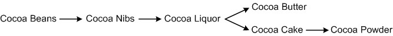

How Cocoa is Made
Cocoa beans are generally grown in terrains located between the tropics of Capricorn and Cancer. Much like other types of crops, origin plays an important role in the fundamental flavor of the resulting cocoa. Cocoa is harvested twice a year and subsequently fermented and dried, typically in small batches at the farm level, but in some instances at larger fermentation and drying facilities. Dried and bagged cocoa is then sampled as it makes its way to Vision Commodities for further processing.
Once at Vision Commodities, cocoa beans are thoroughly inspected to ensure the highest quality standards for raw materials. Cocoa beans are then organized and sorted for processing, then cleaned to remove any impurities, roasted to develop the fundamental flavor and husked to remove the bean shells. The resulting product is roasted cocoa nibs, which can be used as an inclusion or as a flavor or extract base. Cocoa nibs are typically further processed by being ground into fine cocoa liquor, which is the fundamental base for manufacturing chocolate. The shearing forces created during the cocoa nib grinding process cause the cocoa butter (which is innately contained in cocoa) to melt and form the base for the liquified cocoa liquor. Vision Commodities’s manufacturing process provides a fine level of control for manufacturing cocoa liquor and tuning it to specific client needs and desires.
Cocoa liquor can also be further processed into two different products: cocoa butter and cocoa cake. This separation process is achieved through a hydraulic pressing cycle at very high pressures using a series of fine filters and sieves. The cocoa butter obtained through this process is known as ‘Pure Prime Pressed’ cocoa butter and is an essential fat in the manufacturing of chocolates. The resulting cocoa cake (sometimes referred to as ‘press-cake’) is subsequently used to manufacture cocoa powders. Vision Commodities’s cocoa powders can be used in a variety of applications ranging from chocolate manufacturing, to compound coatings, baking mixes, dry mixes, cereal manufacturing, and other such industry segments.
